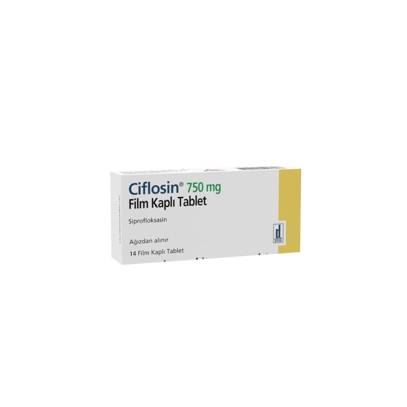

Ciflosin 750 mg Film Kaplı Tablet, 14 Adet

Ne için kullanılır
KT · Bölüm 1 CİFLOSİN, film kaplı tabletler şeklinde kullanıma sunulmuştur. Her bir film kaplı tabletin içinde 750 mg etkin madde (siprofloksasin) bulunmaktadır. CİFLOSİN’in etkin maddesi olan siprofloksasin, kinolonlar adı verilen bir antibiyotik grubuna aittir. CİFLOSİN, 10 veya 14 tablet içeren kutu içerisinde kullanıma sunulmuştur. CİFLOSİN, yetişkinlerde solunum yolları enfeksiyonu tedavisinde, uzun süreli ve tekrarlayan kulak ya da sinüzit enfeksiyonlarında, böbrek ve idrar yolları enfeksiyonlarında, adneksit (dölyatağı ekleri (adneks) olan yumurtalıklar ve tüplerin akut ya da kronik iltihabı), bel soğukluğu (gonore), prostatit dâhil genital organların enfeksiyonlarında, sindirim sistemi enfeksiyonlarında, karın zarı iltihabı (peritonit) gibi karın boşluğu enfeksiyonlarında, cilt ve yumuşak doku enfeksiyonlarında, kemik ve eklem enfeksiyonlarında, Neisseria meningitidis adlı bakterinin neden olduğu enfeksiyonların 18 yaş üzeri önlenmesinde ve şarbon solunması yoluyla maruziyet durumunda ve kötü huylu dış kulak iltihabında kullanılır. CİFLOSİN akyuvar (beyaz kan hücresi) sayısı düşük (nötropeni) olan ve bakteriyel enfeksiyon kaynaklı olduğu düşünülen ateşin söz konusu olduğu hastaların tedavisinde diğer antibiyotiklerle birlikte (kombinasyon tedavisinde) kullanılabilir.
Şiddetli bir enfeksiyon ya da birden fazla türde bakterinin neden olduğu bir enfeksiyon olması halinde, CİFLOSİN’e ek olarak ilave antibiyotik tedavisi uygulanabilir. CİFLOSİN, kistik fibröz (Akciğer, böbrek veya pankreasta bozukluğa neden olan kalıtımsal bir hastalık) bulunan çocuk ve ergenlerde akciğer ve bronş enfeksiyonlarında, böbreklere ulaşanlar (piyelonefrit) dahil, komplike idrar yolu enfeksiyonlarında siprofloksasin etkin maddesine hassasiyet gösterilmesi durumunda diğer alternatif tedaviler uygun olmadığında, şarbon inhalasyonuna (soluma yoluyla) maruziyet durumunda kullanılır. CİFLOSİN, doktorun gerekli görmesi halinde çocuklarda ve ergenlerde görülen diğer spesifik şiddetli enfeksiyonların tedavisi için diğer ajanların kullanılamadığı durumlarda kullanılabilir.
CİFLOSİN dahil florokinolonlar, kronik bronşitin akut bakteriyel alevlenmesi ve komplike olmayan üriner enfeksiyonlarda (idrar yolu enfeksiyonlarında) alternatif tedavi seçeneklerinin varlığında, ciddi yan etki riski nedeniyle kullanılmamalıdır.
Bu endikasyonlarda diğer tedavi seçeneklerinin başarısız olduğu durumlarda kullanılabilir.
CİFLOSİN, yalnızca duyarlı bakterilerin yol açtığı kanıtlanmış ya da bu konuda ciddi şüphe bulunan enfeksiyonların tedavisinde kullanılabilir.